P.S. Клікни по сторінці, відбудеться магія, і увімкнеться дуже гарна пісенька 🥰
Ну звісно, Жадан і Собаки & Христина Соловій — Серце. В мене ця пісня з тобою асоціюється 🤗. Ну, тоді почнімо!
P.S. - Для навігації клікни по сторінці в будь-якому місці
Посмішка. Бо вона така, що викликає посмішку у відповідь 🥰
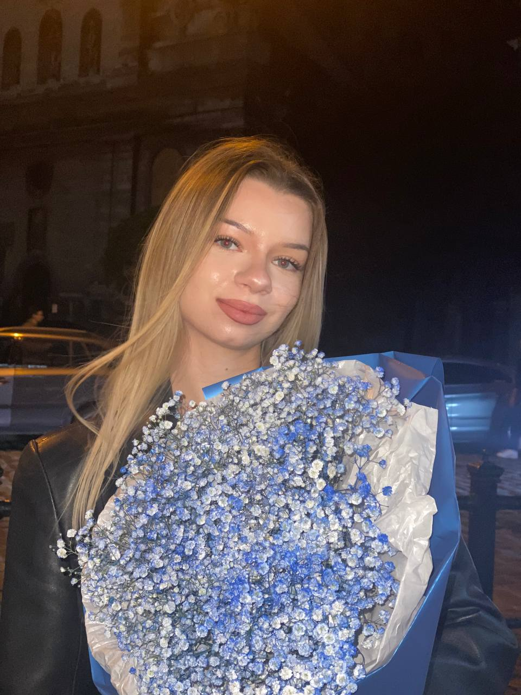
Очі. В них не тільки блиск. В них затишок. І трохи магії 😇
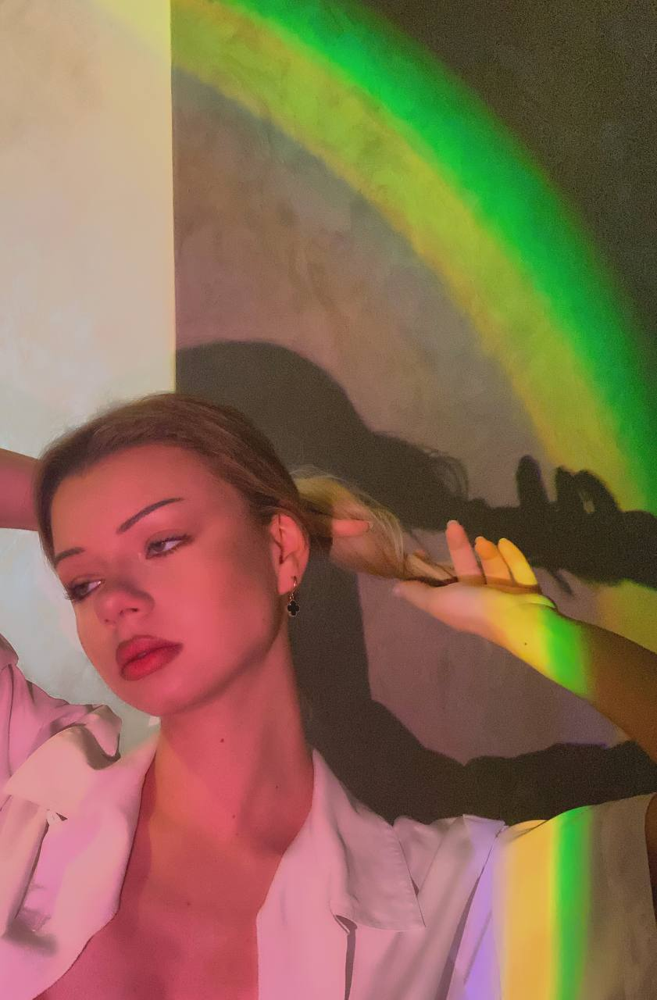
Голос. Навіть коли вона злиться, в її голосі є щось таке... що хочеться обійняти 🤗
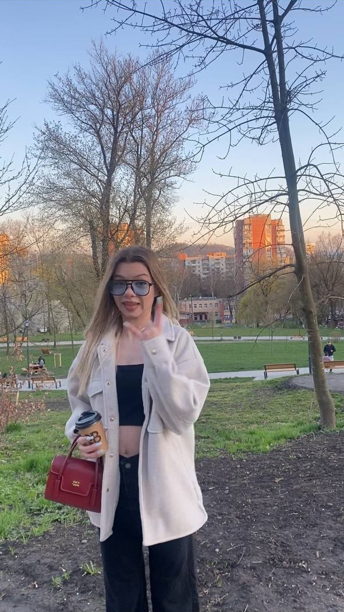
Дуркуватість. Бо з нею не треба прикидатися кимось. Можна просто бути самим собою 👻
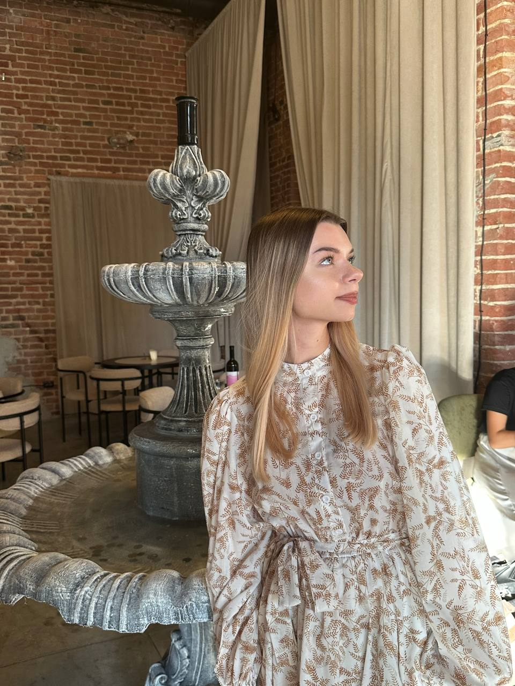
Уважність. Вона помічає дрібниці. Запам'ятовує те, що інші б забули. І це чіпляє 😍
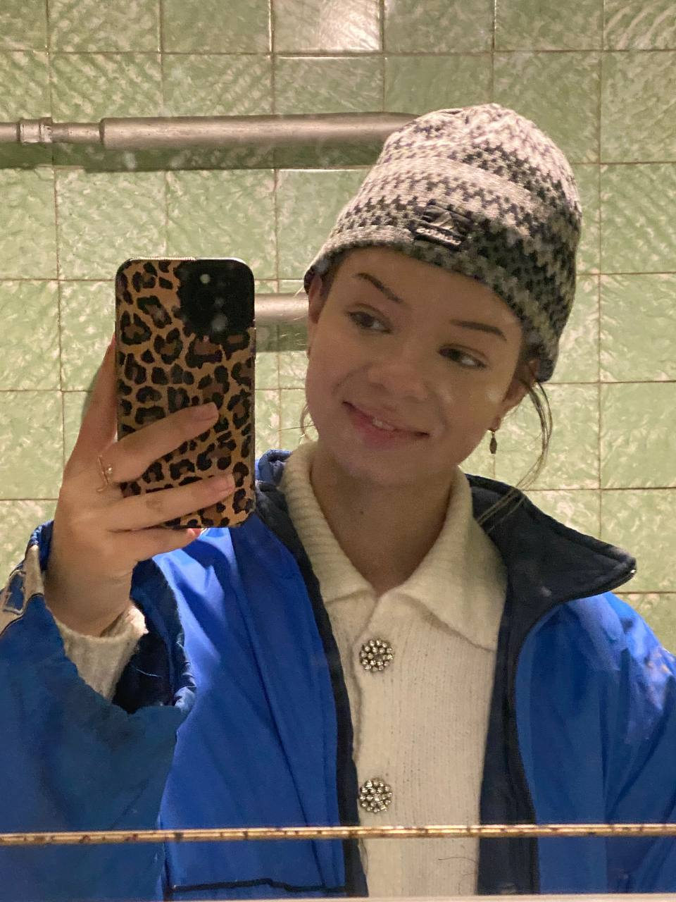
Простота. Бо з нею все стає легше. Навіть найважчі дні 🌤️
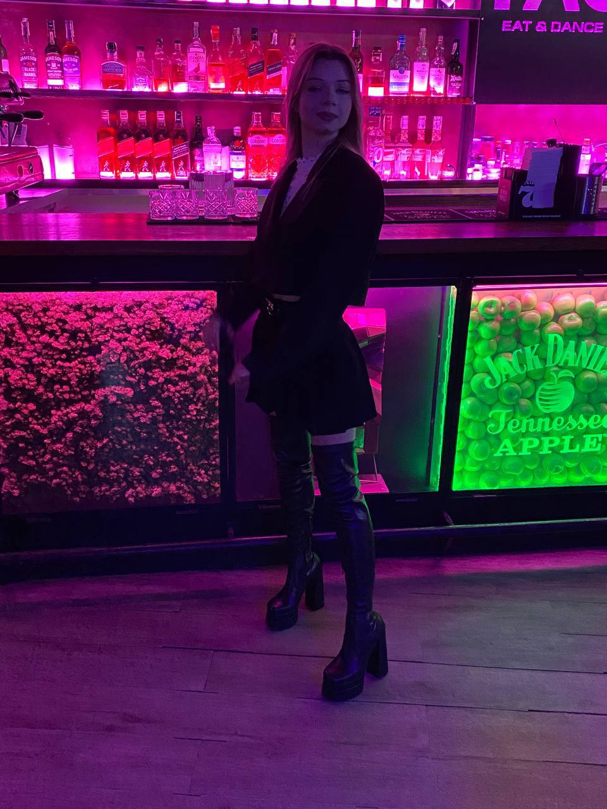
Стиль. Бо вона завжди виглядає так, ніби створена з естетики 🖼️😍
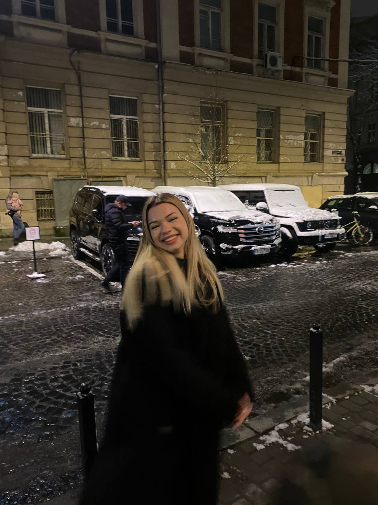
Погляди на життя. Їх хочеться слухати і думати разом 🧠
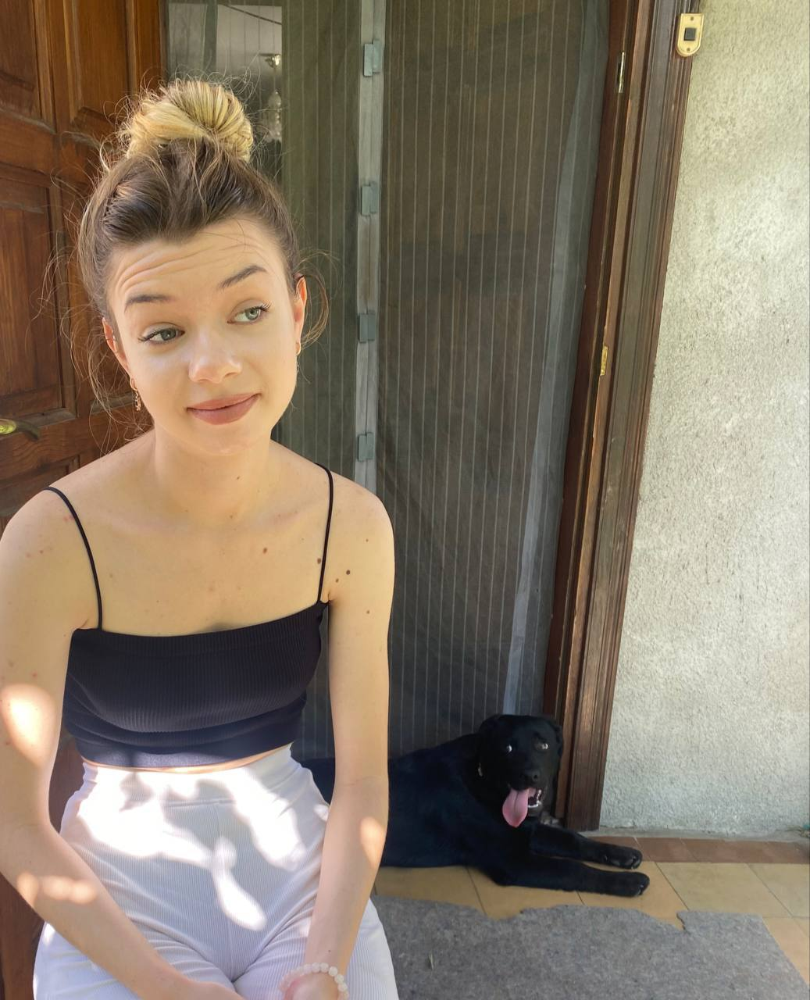
Звичайність у кращому сенсі. Вона така, як є. Без прикрас. І саме така - ідеальна 🧺
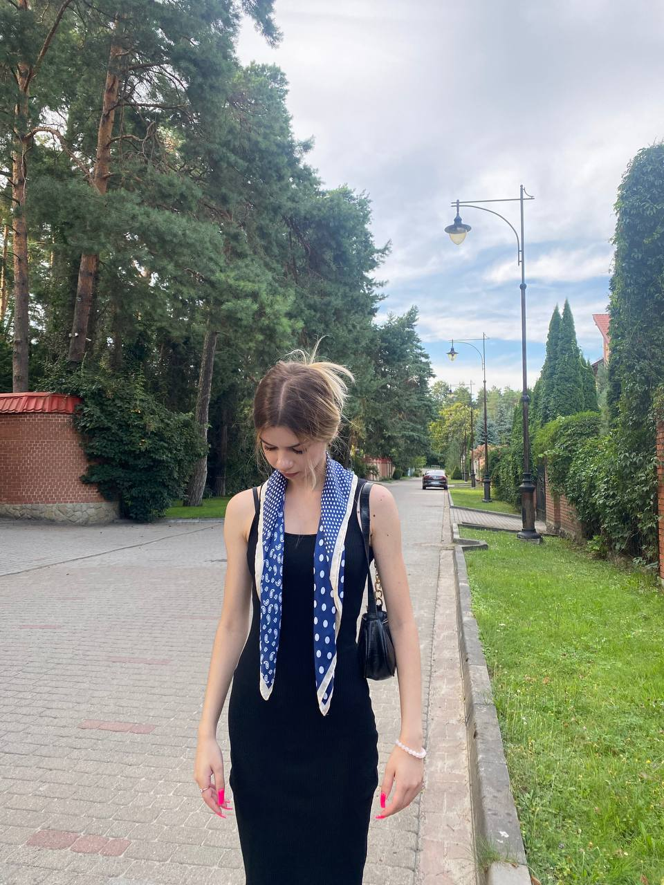
Незграбність іноді. Бо вона тоді така мила, без захисту 🐣🥰
Оленочка, сподіваюсь, я хоч трішки підняв тобі настрій. Проте це ще не все!
Давай пригадаємо спільні моменти, які в нас з тобою були. Ці теплі спогади! 🥰
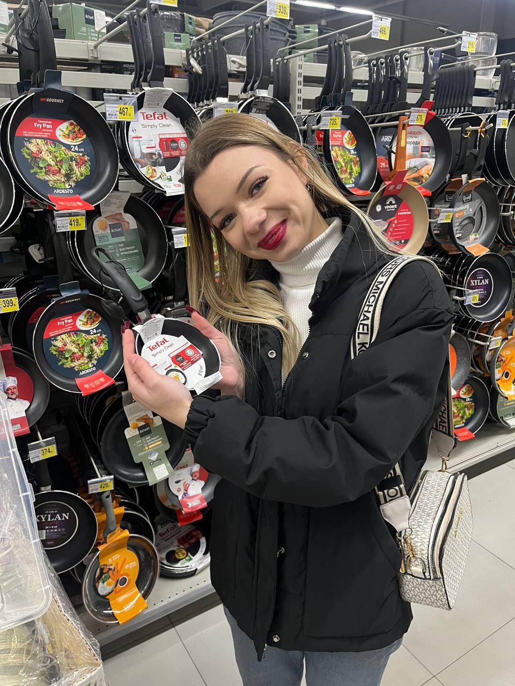
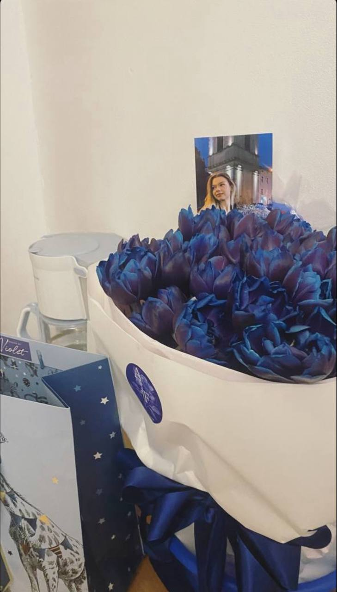
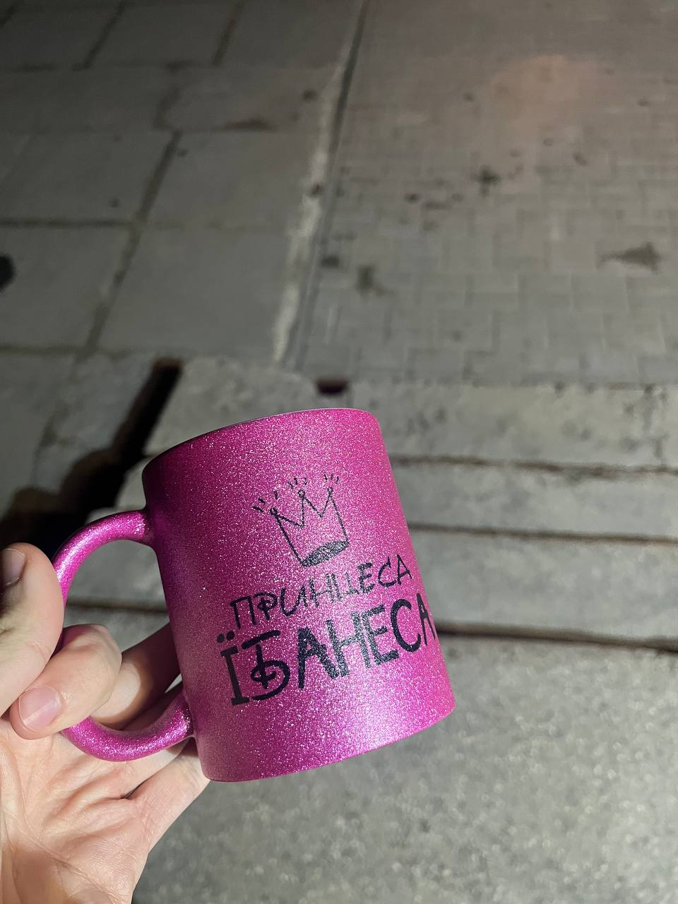

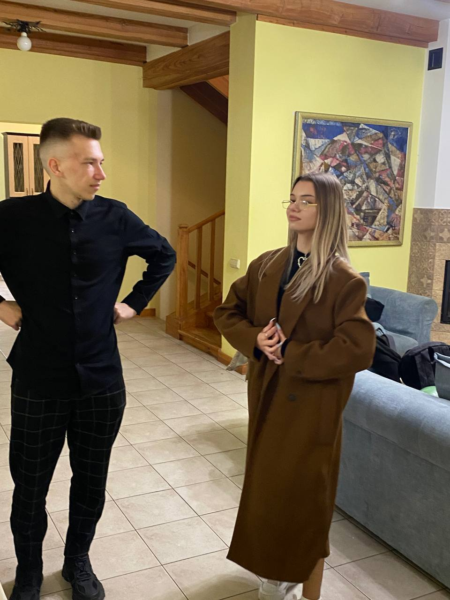